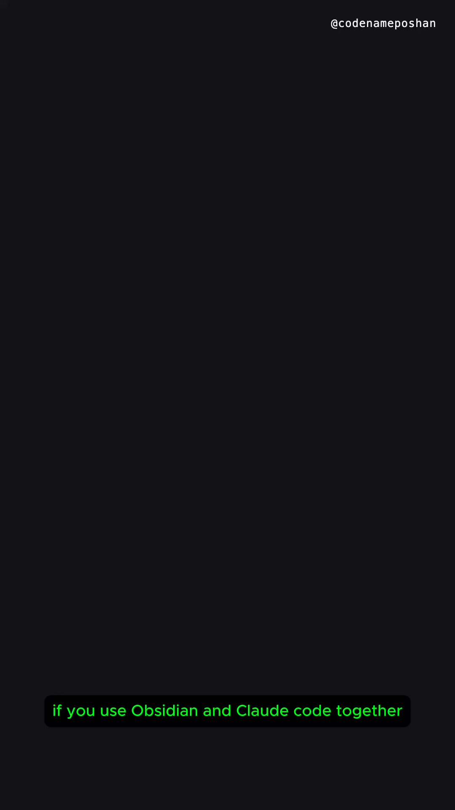

codenameposhan Facebook Reel｜kepano/obsidian-skills：讓 Claude Code 原生讀寫 Obsidian 的 5 個 Agent Skills

一句話摘要
這支 Reel 把 `kepano/obsidian-skills` 包裝成「讓 Claude Code 說 Obsidian 原生語言」的工具：它不是新的 Obsidian 外掛，而是一組 Agent Skills，教 AI agent 正確處理 Obsidian Flavored Markdown、Bases、JSON Canvas、Obsidian CLI 與網頁轉 Markdown 擷取，適合納入「AI × 個人知識管理」工具鏈追蹤。
Facebook Reel 可見資訊
- 分享 URL：https://www.facebook.com/share/v/1D283HAX51/?mibextid=wwXIfr
- Canonical Reel：https://www.facebook.com/reel/1374316214617006
- OG canonical video URL：https://www.facebook.com/61591329065326/videos/obsidian-skills-finmp4/1374316214617006/
- 作者：codenameposhan。
- 公開 metadata 標題：`The CEO of Obsidian built this and barely anyone knows. 5 skills that teach Claude Code to speak Obsidian natively, no broken links, no janky files. Install takes 10 seconds #obsidian #claudecode #devswarm #aiproductivity #vibecoding`
- 擷取時可見數據：約 16 萬次觀看、1,488 個心情；頁面文字另可見 219、313 等互動數字，但登入牆遮擋，未完整判定其欄位。
- 限制：未登入 Facebook，完整影片逐格內容被登入牆遮住；本文以 OpenGraph metadata、封面與外部官方 repo 查核為準。
官方 repo 查核
GitHub repo：`kepano/obsidian-skills`
- 描述：`Agent skills for Obsidian. Teach your agent to use Obsidian CLI and open formats including Markdown, Bases, JSON Canvas.`
- 作者/版權：LICENSE 顯示 `Copyright (c) 2026 Steph Ango (@kepano)`。
- 授權：MIT License。
- 建立時間：2026-01-02。
- 擷取時 GitHub metadata：約 43,850 stars、3,129 forks、62 open issues（會隨時間變動）。
- README 指出這些 skills 遵循 Agent Skills specification，可被 Claude Code、Codex、OpenCode 等 skills-compatible agent 使用。
5 個 skills 是什麼
| Skill | 用途 |
|---|---|
| `obsidian-markdown` | 建立/編輯 Obsidian Flavored Markdown：wikilinks、embeds、callouts、properties 等 Obsidian 特有語法。 |
| `obsidian-bases` | 建立/編輯 Obsidian Bases `.base`：views、filters、formulas、summaries。 |
| `json-canvas` | 建立/編輯 JSON Canvas `.canvas`：nodes、edges、groups、connections。 |
| `obsidian-cli` | 透過 Obsidian CLI 與 vault 互動，也涵蓋 plugin/theme development 相關操作。 |
| `defuddle` | 用 Defuddle 從網頁抽取乾淨 Markdown，移除雜訊以節省 tokens。 |
安裝線索
README 提供幾種方式：
- Marketplace：`/plugin marketplace add kepano/obsidian-skills` 後 `/plugin install obsidian@obsidian-skills`。
- npx skills：`npx skills add git@github.com:kepano/obsidian-skills.git`，或使用 HTTPS：`npx skills add https://github.com/kepano/obsidian-skills`。
- Claude Code 手動安裝：把 repo 內容放進 Obsidian vault 根目錄的 `/.claude` 資料夾（或 Claude Code 使用的資料夾）。
為什麼值得收藏
- 這類 skills 把「AI 編輯知識庫」從自由發揮變成可檢查的規範：Markdown frontmatter、wikilink、canvas JSON、Bases 語法都能降低寫壞檔案的機率。
- 對欒帥的 AI 學習雷達/個人知識庫工作流，這是可借鏡的方向：讓 agent 先學會資料格式與 vault 約定，再要求它整理、重構與建立新筆記。
- 對課程展示，可用它說明「Agent Skills / Tool-use playbook」與一般 prompt 的差異：skills 是可版本控管、可分享、可審查的操作知識。
風險與注意事項
- 「Install takes 10 seconds」屬社群短影音 framing；實際可用性取決於 agent、技能支援、vault 路徑、OS 與權限。
- Agent 能讀寫 vault 代表有破壞檔案的能力；建議搭配 git、備份、分支或測試 vault。
- 不要讓 agent 直接處理含密碼、API key、私密學生資料或未授權內容的 vault；必要時先做資料隔離。
- Obsidian Bases / CLI / Agent Skills 生態仍在變動，README 與安裝指令需以 repo 最新版本為準。
- 這是技能集合，不是保證「零 broken links / 零 janky files」；複雜 vault 仍需人工 review。
來源
- Facebook Reel：https://www.facebook.com/reel/1374316214617006
- Facebook share URL：https://www.facebook.com/share/v/1D283HAX51/?mibextid=wwXIfr
- GitHub repo：https://github.com/kepano/obsidian-skills
- README：https://raw.githubusercontent.com/kepano/obsidian-skills/main/README.md
- LICENSE：https://raw.githubusercontent.com/kepano/obsidian-skills/main/LICENSE